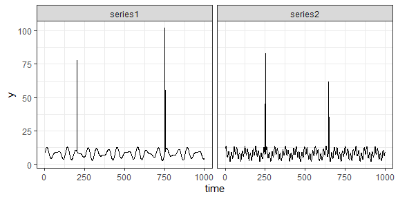
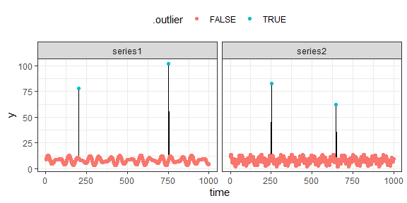
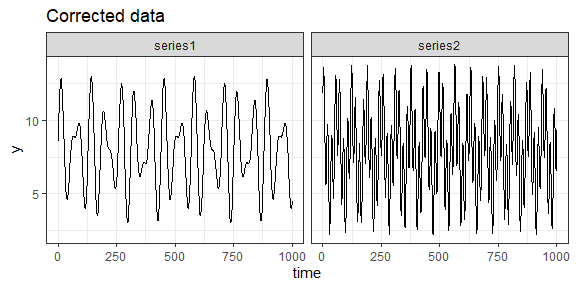

The goal of silk is to make curves with outliers smooth as silk.
Installation
You can install the development version of silk from GitHub with:
# install.packages("devtools")
devtools::install_github("TeroJii/silk")Example
The objective of this package is to provide a simple way to correct individual outlier values. The package includes two main functions: find_outliers() and correct_outliers(), for finding and correcting outliers, respectively.
Let’s take a look at these functions in action.
Detecting outliers in example data
The package contains an example dataset silk_data1 which we can use to demonstrate the functionality of the package.
library(silk)
## basic example code
data("silk_data1")
silk_data1 |>
head()
#> time y group
#> 1 1 8.584244 series1
#> 2 2 9.159694 series1
#> 3 3 9.717704 series1
#> 4 4 10.249923 series1
#> 5 5 10.748432 series1
#> 6 6 11.205878 series1If we visualize the data, we see that there are a few unusual values in the data.
library(ggplot2)
silk_data1 |>
ggplot2::ggplot(ggplot2::aes(x = time, y = y)) +
ggplot2::geom_line() +
ggplot2::theme_bw() +
ggplot2::facet_wrap(~group)
We can detect these unsual data points usign the silk::find_outliers() function, which takes a data.frame and a column name as input, and returns a modified version of the input data.frame.
silk_data1 |>
silk::find_outliers(col = "y", group_col = "group") |>
head()
#> time y group .median .mad .outlier
#> 1 1 8.584244 series1 8.065949 2.713192 FALSE
#> 2 2 9.159694 series1 8.065949 2.713192 FALSE
#> 3 3 9.717704 series1 8.065949 2.713192 FALSE
#> 4 4 10.249923 series1 8.065949 2.713192 FALSE
#> 5 5 10.748432 series1 8.065949 2.713192 FALSE
#> 6 6 11.205878 series1 8.065949 2.713192 FALSEAs we can see, the function has added new columns to the data. The .outlier column indicates whether a value is an outlier or not.
Visulizing the outliers
We can visualize the outliers using the ggplot2 package:
silk_data1 |>
silk::find_outliers(col = "y", group_col = "group") |>
ggplot2::ggplot(ggplot2::aes(x = time, y = y)) +
ggplot2::geom_line() +
ggplot2::geom_point(ggplot2::aes(color = .outlier)) +
ggplot2::theme_bw() +
ggplot2::facet_wrap(~group) +
ggplot2::theme(legend.position = "top")
Correcting the outliers
The silk package also includes a function for correcting the outliers. The silk::correct_outliers() function can be used together with the silk::find_outliers() function in the following fashion:
silk_data1 |>
silk::find_outliers(col = "y", group_col = "group") |>
silk::correct_outliers(col = "y") |>
ggplot2::ggplot(ggplot2::aes(x = time, y = y)) +
ggplot2::geom_line() +
ggplot2::theme_bw() +
ggplot2::facet_wrap(~group) +
ggplot2::ggtitle("Corrected data")
The silk::correct_outliers() function overwrites the original column values, replacing the outlier values with the mean of the previous and following observation in the data.